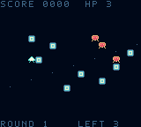
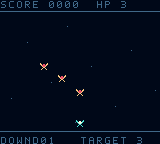
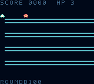
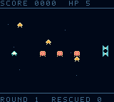
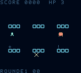
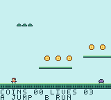
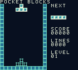
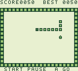
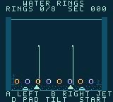
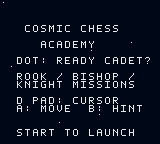

FEATURED · ARCADE

Meteor Mayhem
Fly, blast, dash. Build a kill chain through three waves and take down the boss.
D-pad / arrows move · A / Z fires · B / X dashesHandmade little worlds for a real cartridge and your browser. Eleven finished games and one chess experiment in progress.
View the source on GitHub ↗
Fly, blast, dash. Build a kill chain through three waves and take down the boss.
D-pad / arrows move · A / Z fires · B / X dashes
Shove heavy cargo through a drifting depot. Pin the hunter drones, fire a pulse when cornered, and survive three rounds.
D-pad moves and pushes · A / Z pulses · Hold B / X to brake
Flap through a nebula, steal the high ground, and dive onto rival riders across three escalating waves.
Left/right steer · A / Z flaps · B / X dashes
Run a four-lane space counter. Launch parcels, catch the returns, and keep customers from reaching your dock.
Up/down chooses lane · A / Z sends · B / X catches
Collect little lost drones into a moving convoy and guide them through pursuers to the glowing gate.
D-pad moves · A / Z dashes · B / X distracts
Guard three airlocks. Identify raiders, spare friendly arrivals, and clear each shift before your station falls.
Left/right chooses door · A / Z fires · B / X scans
Leap across gaps, collect coins, bounce on critters, and reach the flag.
D-pad / arrows move · A / Z jumps · B / X runs · Start / Enter pauses
Stack seven shapes, clear rows, and keep up as the blocks fall faster.
Arrows move · Z / X rotate · Up hard-drops · Enter pauses
Grow through a pocket garden. Eat fruit, pick up speed, and avoid your own tail.
D-pad / arrows steer · A / Z starts · Start / Enter pauses
Pump two water jets, float eight rings, then let them settle onto the pegs.
A / Z left jet · B / X right jet · Arrows tilt · Enter pauses
A compact neon heist with three stolen cores, a secret log, and one timed getaway.
D-pad / arrows move · A / Z advances · B / X checks mission
Early prototype: three movement drills for rook, bishop, and knight. Pawn moves, king safety, tactics, and the larger story are still to come. This is not a complete chess game yet.
D-pad / arrows move cursor · A / Z selects and moves · B / X shows legal squares · Start / Enter continues